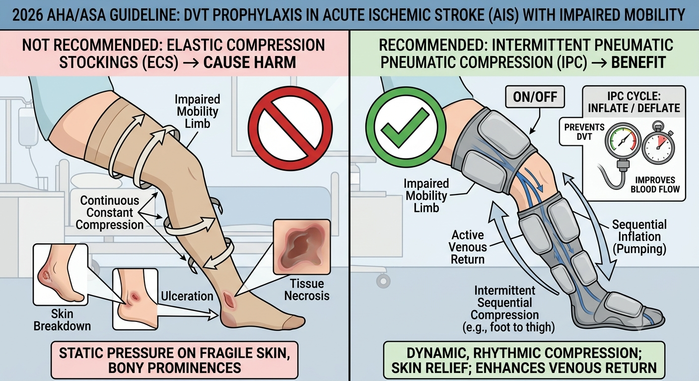

🧪 Investigations – Explanation
Q1-Option 1: Vital signs stat
When attending patients, vital signs must be checked as they may affect our choice of subsequent assessment and treatment. In Mr. Lau's case, measuring BP is especially important as he has received IVT.
According to 2026 AHA/ASA Guideline for the Early Management of Patients With Acute Ischemic Stroke [1], BP should be maintained at < 180/105 mmHg for at least the first 24 hours after IVT treatment.
This is because high BP after IVT may increase the risk of hemorrhagic transformation. In fact, the risk of symptomatic intracranial hemorrhage following IVT was reported to range from 2 to 7% [2].
Q1-Option 2: CXR
As Mr. Lau has increased oxygen demand, CXR should be checked to identify the cause of low oxygen level so that suitable physiotherapy treatment could be provided to Mr. Lau. We can see right lower zone hazziness in his CXR.
Q1-Option 3: mobility level
As mentioned previously, BP should be maintained at < 180/105 mmHg for at least the first 24 hours after IVT treatment. As Mr. Lau's BP was 190/90 mmHg, out-of-bed assessment should be refrained to avoid any further rise in BP.
Q1-Option 4: Perform neurological exam
Although mobility assessment could not be performed due to highish BP, stroke assessment on bed should still be performed to assess neurological function and severity of disability in Mr. Lau. This is because of the following reasons.
First, we have to know Mr. Lau’s impairment and disability level in order to better formulate his rehabilitation plan. For example, for Mr. Lau whose hemiplegic limb power scored only grade 3, equipment that provides stable upper limb and truncal support e.g. cardiac support walker could be considered during weight-bearing exercises. On the other hand, for a stroke patient with hemiplegic limb power scoring grade 4+, less supportive equipment e.g. frame or stick may be considered.
Second, monitoring Mr. Lau’s neurological function is important as Lauges of signs and increased severity of neurological deficits may indicate stroke progression / recurrent stroke which requires medical attention.
In addition, doctors will assess whether patients’ clinical signs match with CTB findings. If they do not match, further imaging / investigations, e.g. MRI Brain may need to be performed.
💊 Management – Explanation
Q2-Option 1: Keep bed rest & inform case nurse + Option 3: Bedside sitting / walking +/- sit out of bed
As mentioned above, BP should be maintained at < 180/105 mmHg for at least the first 24 hours after IVT treatment. Noting poor BP control of Mr. Lau, mobilization should be suspended and case nurse should be informed.
Q2-Option 2: Prescribe TED stockings
According to 2026 AHA/ASA Guideline for the Early Management of Patients With Acute Ischemic Stroke [1], elastic compression stockings cause harm, including skin breakdown, ulceration, and tissue necrosis in patients with acute ischemic stroke who have impaired mobility. Hence, TED stockings should not be given to Mr. Lau. On the other hand, pneumatic compression is recommended for DVT prophylaxis in patients with acute ischemic stroke who have impaired mobility.

Q2-Option 4: Chest physiotherapy
As Mr. Lau has increased oxygen demand and his CXR is showing right lower zone hazziness, chest infection is highly suspected, hence chest physiotherapy should be performed.
References:
[1] Prabhakaran S, Gonzalez NR, Zachrison KS, Adeoye O, Alexandrov AW, Ansari SA, et al. 2026 Guideline for the early management of patients with acute ischemic stroke: a guideline from the American Heart Association/American Stroke Association. Stroke. 2026. doi: 10.1161/STR.0000000000000513.
[2] Seet RC, Rabinstein AA. Symptomatic intracranial hemorrhage following intravenous thrombolysis for acute ischemic stroke: a critical review of case definitions. Cerebrovasc Dis. 2012;34:106–114. doi: 10.1159/000339675
Case Creator: Ms. Jamie Ip, Mr. Eric Chan